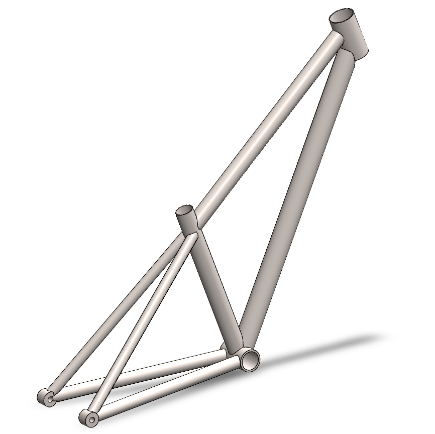

2023

Beyond Statistical Similarity: Rethinking Metrics for Deep Generative Models in Engineering Design
October 2023; Computer Aided Design
Counterfactuals for Design: A Model-Agnostic Method for Design Recommendations
Aug. 2023; Journal of Mechanical Design

FRAMED: An AutoML Approach for Structural Performance Prediction of Bicycle Frames
March 2023; Computer Aided Design